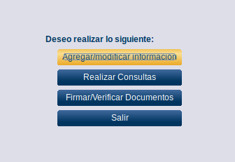
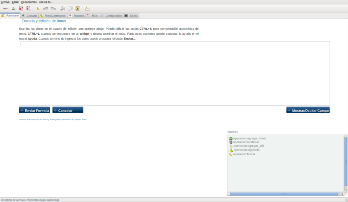

Módulo Agregar/modificar información
12.3.- Módulo Agregar/modificar información
Para acceder a este módulo se hace click en el botón Agregar/modificar información (ver figura S3.1-1)

Figura S3.1-1. selección del botón Agregar/modificar información
y se desplegara una ventana (ver figura S3.1-2) donde se procederá a realizar las operaciones correspondiente a este módulo

Figura S3.1-2. Módulo de Agregar/modificar información

Figura S3.1-3. Menú inteligente, Operaciones del módulo Agregar/modificar información
En la figura S3.1-3, el menú inteligente aparecen las operaciones que se pueden realizar en el módulo Agregar/modificar información
-
opercion:agrega_ticket: esta operación permite agregar un nuevo ticket al sistema trac
-
opercion:agrega_ticket: esta operación permite agregar un nuevo ticket al sistema trac
-
operacion:modificar: esta operación permite modificar un ticket del sistema trac
-
operacion:agrega_wiki: esta operación permite agregar un texto en formato wiki (información relacionada con el ticket) a un determinado ticket
-
operacion:siguiente: esta operación permite cambiar de un ticket, por ejemplo cambiar un ticket de un estado nuevo a un estado aceptado.
-
operacion:borrar: esta operación permite eliminar un ticket tomando como entrada su número de identificación (id)